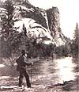

EARTH DIARY
Damned if you do, dammed if you don't.
John Muir, the
founder of the
Sierra Club, in
Hetch Hetchy
Valley.
Interior Secretary Donald P. Hodel stunned California environmentalists and politicians August 6 when he suggested tearing down O'Shaugnessy Dam in Yosemite National Park. Hodel, who has been harshly criticized by environmental leaders for insensitivity to the natural landscape, is said to have dreamed up the idea on his own.
The most intemperate reaction came from Dianne Feinstein, mayor of San Francisco.
"The worst idea since selling arms to Iran," she railed. The Sierra Club praised the idea, saying that the dam in Hetch Hetchy Valley was the oldest blot on the national park system.
Other environmentalists were skeptical of Mr. Hodel's motives, wondering, for example, if he was hoping to deflect the public's attention from ecological concerns in Alaska long enough for him to persuade Congress to let oilmen into the Arctic National Wildlife Refuge.
The San Francisco newspapers were quick to judge the proposal. "Hands off, Mr. Secretary," warned the Chronicle . "The best argument yet for drug testing of federal employees," thundered the Examiner .
To understand the reactions of Ms. Feinstein and the local press, one must realize that by virtue of heroic wheeling and dealing in the first part of this century, the city of San Francisco owns one of the sweetest deals for water and power of any city in the land. Enshrined in a law known as the Rak er Act, San Francisco has rights to a fair fraction of the pure, sweet water that flows down the Tuolumne River from the Yosemite high country. The city also operates several power plants on the river, which earned it a tidy profit of $50 million last year.
But let's stop and think about this for a minute. What right does a city have to defile a national park the way San Francisco does with this benighted reservoir? If the city-any city-tried to build a dam in the middle of a national park today, it would be run out of town. Mr. Hodel's motives may be other than he says they are, but that doesn't make the idea a bad one.
Indeed, conservationists have advocated demolishing Hetch Hetchy dam for decades. And most important, it seems to me, is a very curious if unspoken assumption in all this: that dams create water. Put that way, it is ridiculous, of course. But that's what Mayor Feinstein and the others are saying when they scream that tearing down the dam will deprive San Francisco of its water supply.
Water flows from the sky as rain and snow, runs down hills and cliffs and winds up in a river. It will keep doing so as long as it keeps raining, dam or no dam. What's more, San Francisco doesn't take its water from the river at Hetch Hetchy anyway: Its intake pipes are below the Moccasin Creek Power Station 40 miles downstream.
And what an absolutely magnificent idea! Hetch Hetchy Valley was a near carbon copy of Yosemite Valley. The dam that drowned the valley and killed the river is said to have killed John Muir, the founder of the Sierra Club, as well. What a splendid monument to the environmental sanity that is finally beginning to dawn on this country to remove that wretched concrete plug and watch as nature slowly reclaims its own.
Tom Turner, a writer and editor who's worked in the environmental field for 17 years, is with the Sierra Club Legal Defense Fund, an independent environmental law firm that represents many orgamzations across the country. It is supported principally by private donations. For more information, write Sierra Club Legal Defense
Fund, 2044 Fillmore St., San Francisco, CA 94115.
|
 John Muir, the founder of the Sierra Club, in Hetch Hetchy Valley. |
|
|